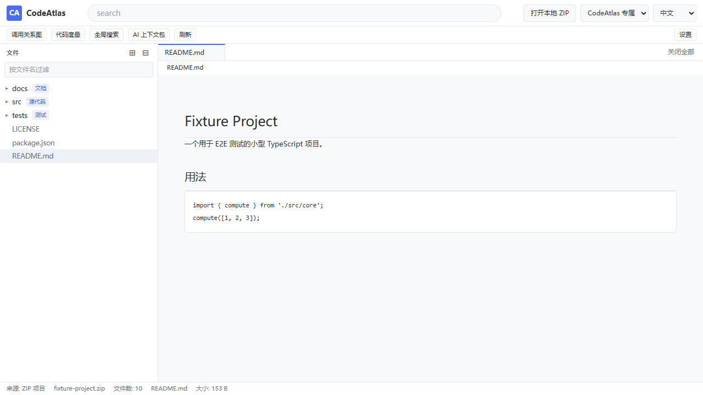
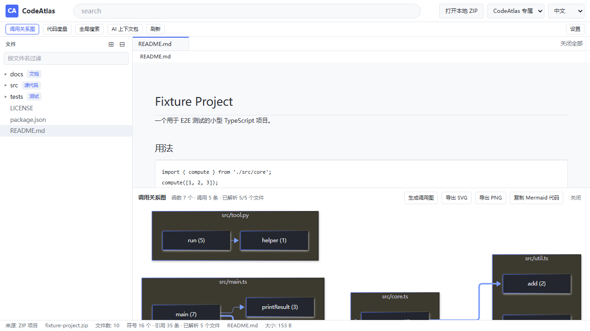
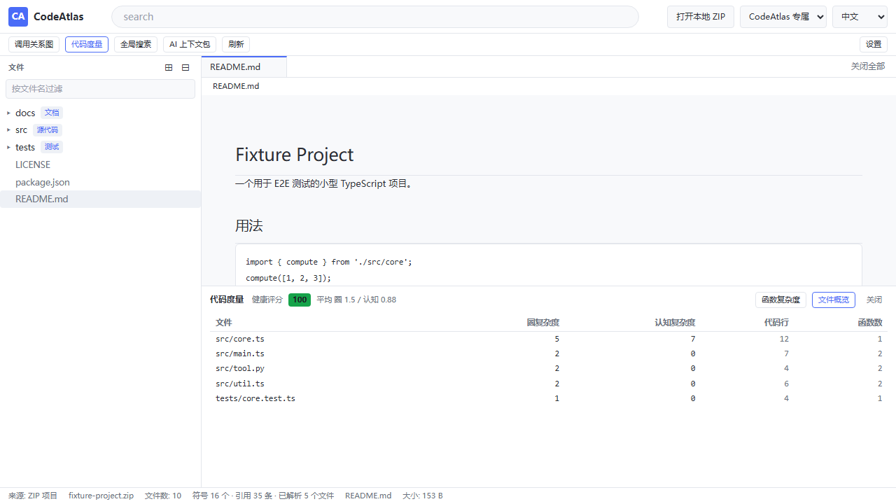
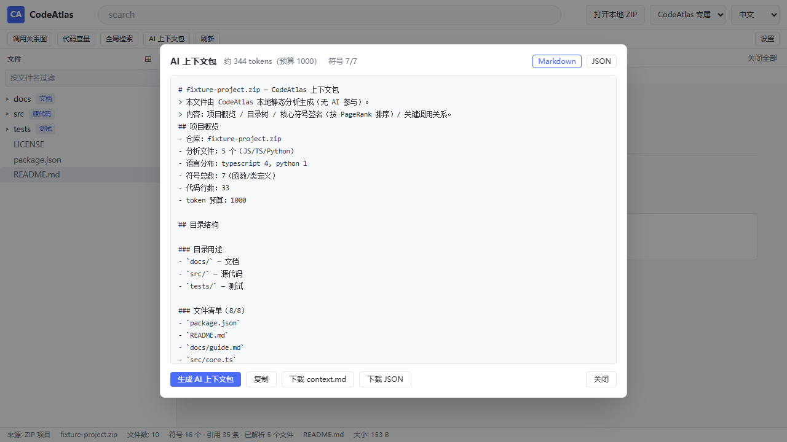

为开发者绘制一张可交互的代码地图：目录是地形，调用关系是道路，阅读路线是导航，AI 上下文包是给智能助手的旅行指南。
完全本地运行 零 AI 调用 免费开源 约 3 MB 安装包 支持完全断网内网环境
折叠、过滤，并按规则自动标注目录用途（src/ → 源代码、.github/ → CI 配置…）。
基于 tree-sitter 真实语法树构建函数级调用图，可导出 SVG / PNG，也可复制 Mermaid 代码。
Ctrl/Cmd + 单击 或 F12 转到定义，一键列出全部引用位置（文件:行号）。
圈复杂度、认知复杂度、SLOC 与项目健康评分，单次 AST 遍历算出全部指标。
PageRank 排序 + token 预算裁剪，一键生成给 Cursor / Trae / WorkBuddy 的项目摘要。
Web Worker 中执行正则搜索，10 秒超时自动终止，搜索再大也不卡界面。




| 输入 | 用法 |
|---|---|
| GitHub 网址 | https://github.com/facebook/react（也支持 /tree/branch/subdir） |
| 仓库简写 | facebook/react |
| 仓库名搜索 | 输入 react 回车，下拉前 10 条结果，方向键选择 |
| 本地 ZIP | 点击「打开本地 ZIP」，或直接把 .zip 拖入窗口（每个 ZIP 一个独立窗口） |
下载 Releases 中的安装包双击安装即可， 无需安装 Node.js 或 Rust。Windows 10（1803+）/ 11 已内置 WebView2 运行时。
git clone https://github.com/Linu-code/codeatlas.git
cd codeatlas
npm install
npm run dev # 浏览器模式
npm run tauri dev # 桌面模式（需 Rust 工具链）
npm run build:exe # 打包 exe（产物落到仓库根目录）构建 exe 需要一次性安装 Rust（MSVC 工具链）与 Visual Studio C++ 生成工具，详见 README。
不调用任何 LLM / AI API / 本地模型；解读能力全部来自确定性静态分析与模板。
不收集数据、不上传文件；ZIP 解压前做路径穿越校验（拒绝 ../、绝对路径、UNC）。
默认只访问 api.github.com 与 raw.githubusercontent.com，CSP 与代码双层强制。
上传本地 ZIP 后全功能可用，适合完全断网的内网环境。